兩個閥門定生死
點各章標題旁的 ▶ 按鈕可直接跳到影片該段。
0開場
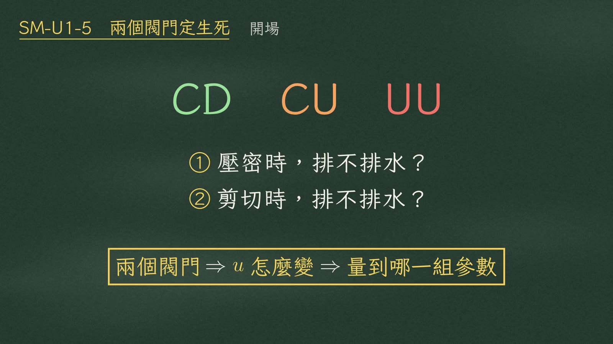
三軸試驗的 CD、CU、UU，不必死背。只要問兩個問題：①壓密時排不排水？②剪切時排不排水？
1兩個閥門
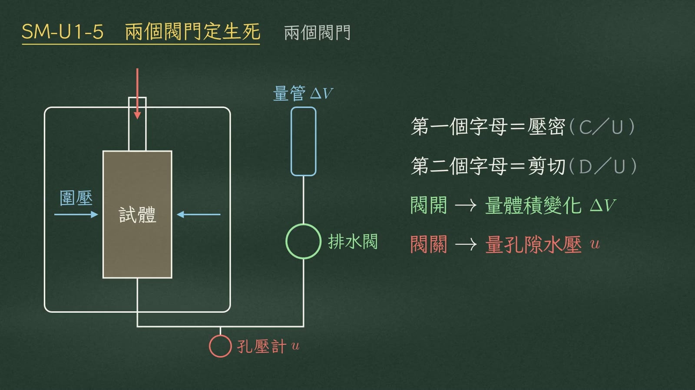
三軸儀其實只有一顆排水閥，在兩個階段各決定一次開或關。縮寫第一個字母講壓密（C／U），第二個字母講剪切（D／U）。
| 閥門狀態 | 量什麼 |
|---|---|
| 閥開 | 量體積變化 \(\Delta V\) |
| 閥關 | 量孔隙水壓 \(u\) |
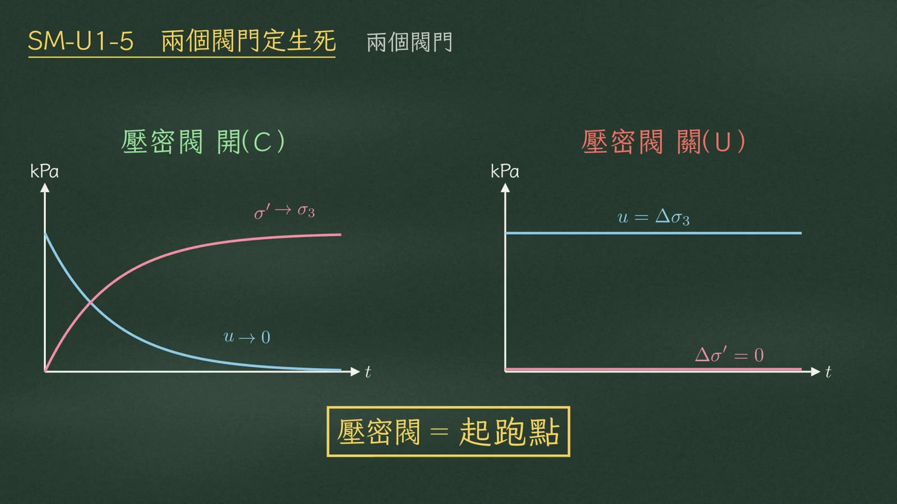
先看壓密閥。
| 壓密閥 | 孔隙水壓 | 有效應力 |
|---|---|---|
| 開（C） | 消散，\(u\to0\) | 上升到圍壓 \(\sigma'\to\sigma_3\)，骨架被壓緊 |
| 關（U） | 圍壓增量全由水扛，\(u=\Delta\sigma_3\) | 不變，\(\Delta\sigma'=0\)；加再多圍壓也沒用 |
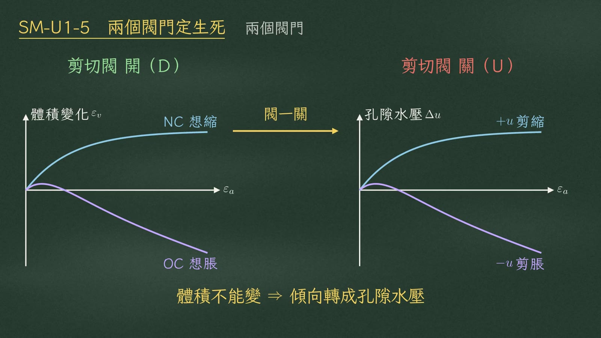
再看剪切閥。正常壓密（NC）黏土受剪想縮，過壓密（OC）黏土想脹。閥開，傾向變成體積變化；閥關，體積不能變，就轉成孔隙水壓：
| 土況 | 剪切閥開（D） | 剪切閥關（U） |
|---|---|---|
| NC 想縮 | 體積縮小 | \(+u\)（剪縮是正孔壓） |
| OC 想脹 | 體積膨脹 | \(-u\)（剪脹是負孔壓） |
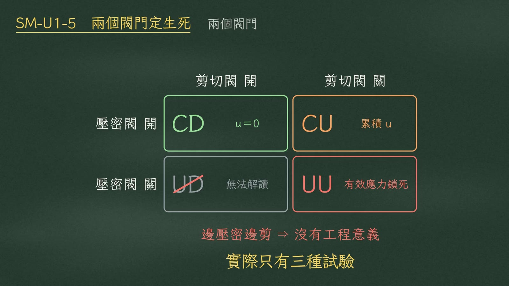
四種組合為什麼沒有 UD？不壓密卻排水剪，等於邊壓密邊剪，結果無法解讀；現場能排水的土也早就壓密完了。所以只有三種試驗。
| 剪切閥 開 | 剪切閥 關 | |
|---|---|---|
| 壓密閥 開 | CD：\(u=0\) | CU：累積 \(u\) |
| 壓密閥 關 | UU：有效應力鎖死 |
閥門只管孔隙水壓；孔隙水壓只管圓在哪裡，不管圓多大。圓多大，由有效應力決定。
2CD u 全程為零
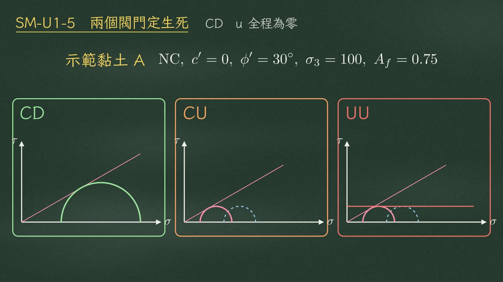
接下來用同一塊示範黏土：
同一個圍壓，三個試驗量到三種破壞圓。
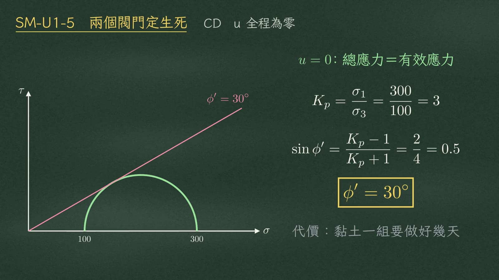
先看 CD。兩個閥門都開，剪得夠慢，孔隙水壓全程為零，一個圓就是有效應力圓。\(\sigma_3=100\)，一路剪到 300：
$$K_p=\frac{\sigma_1}{\sigma_3}=\frac{300}{100}=3,\qquad \sin\phi'=\frac{K_p-1}{K_p+1}=\frac{2}{4}=0.5\;\Rightarrow\;\phi'=30^\circ$$直接量到 30°。代價是黏土一組要做好幾天。
3CU 圓左移、半徑不變
圖中顏色：藍虛線＝總應力圓、粉紅實線＝有效應力圓；公式同色對應。
CU 是壓密閥開、剪切閥關。剪切時水排不掉，破壞時累積 \(u_f=+60\)。總應力圓從 100 到 180，軸差應力 80：\(\color{#3d86b3}\sigma_1=100+80=180\)。
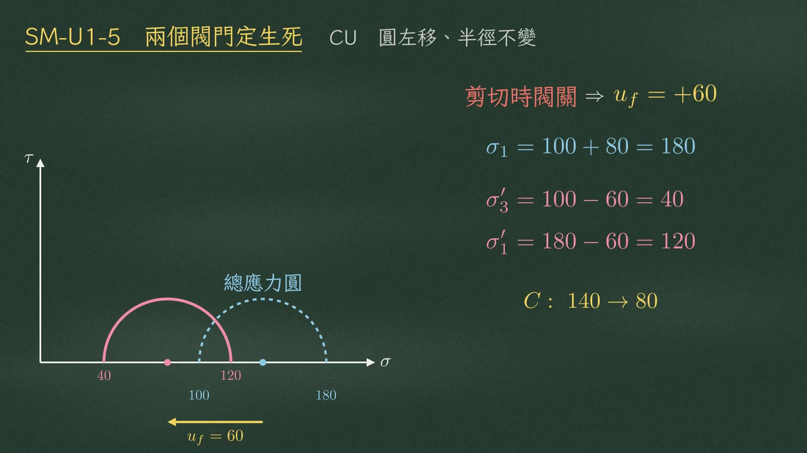
有效應力圓怎麼畫？兩邊同扣 \(u_f\)：
$$\color{#d9607e}\sigma'_3=100-60=40,\qquad \sigma'_1=180-60=120$$整個圓往左平移 60，圓心從 140 移到 80。
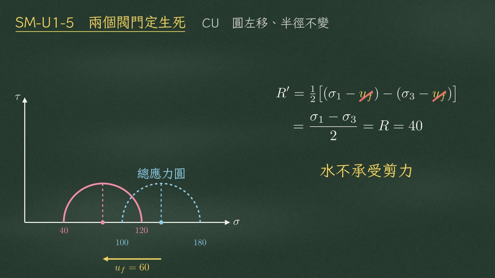
半徑呢？兩個主應力相減時，\(u_f\) 剛好抵消，半徑還是 40：
$$R'=\tfrac12\big[(\sigma_1-\cancel{u_f})-(\sigma_3-\cancel{u_f})\big]=\frac{\sigma_1-\sigma_3}{2}=R=40$$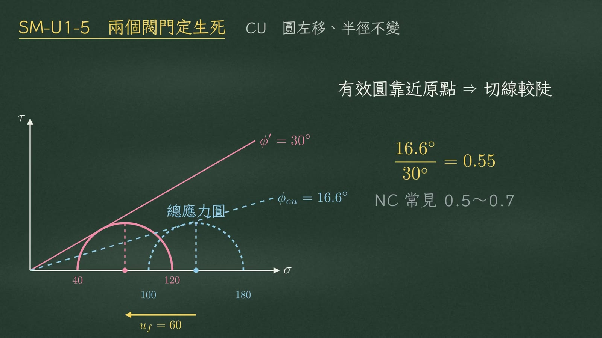
兩個圓一樣大，有效圓比較靠近原點，切線就比較陡。所以有效摩擦角 30°，大於 CU 摩擦角 16.6°：
$$\frac{\color{#3d86b3}\phi_{cu}}{\color{#d9607e}\phi'}=\frac{16.6^\circ}{30^\circ}=0.55$$正是正常壓密黏土常見的範圍（NC 常見 0.5～0.7）。
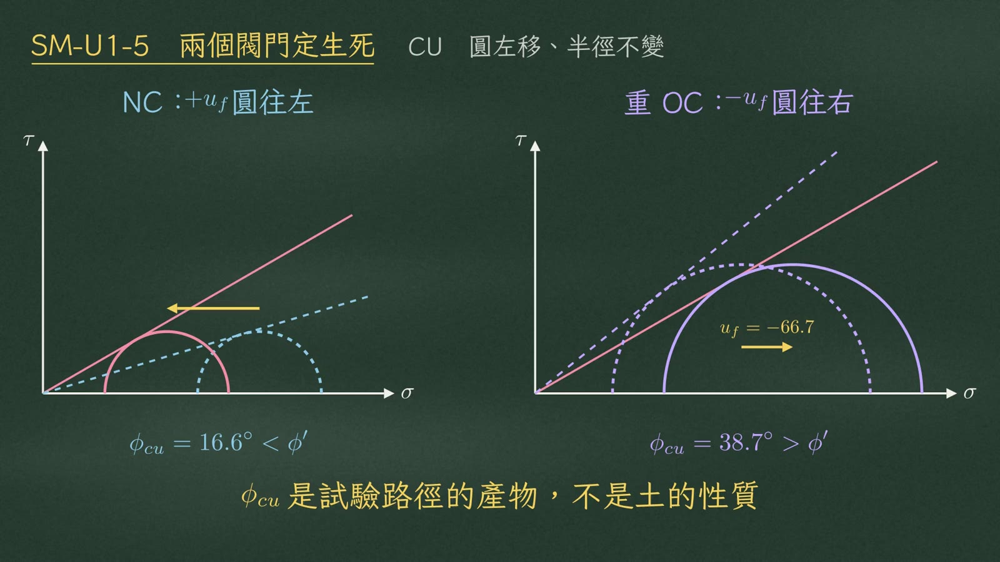
但重過壓密黏土剪脹，\(u_f\) 是負的，例如 \(-66.7\)，圓反而往右移，CU 摩擦角變成 38.7°，比有效摩擦角還大。
| 土況 | \(u_f\) | 圓移動 | \(\phi_{cu}\) vs \(\phi'\) |
|---|---|---|---|
| NC | \(+60\) | 往左 | \(16.6^\circ<\phi'\) |
| 重 OC | \(-66.7\) | 往右 | \(38.7^\circ>\phi'\) |
4UU 圓一樣大
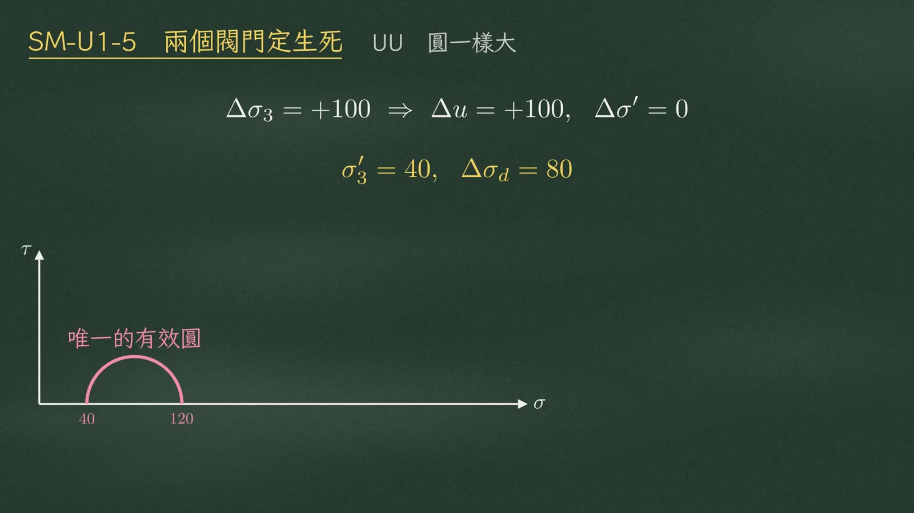
UU 兩個閥門都關。室壓每加 100，100 全部進水，有效應力完全不變：
$$\Delta\sigma_3=+100\;\Rightarrow\;\Delta u=+100,\quad \Delta\sigma'=0$$破壞時 \(\sigma'_3\) 永遠是 40，軸差應力 \(\Delta\sigma_d\) 永遠是 80——唯一的有效圓就是 40～120。
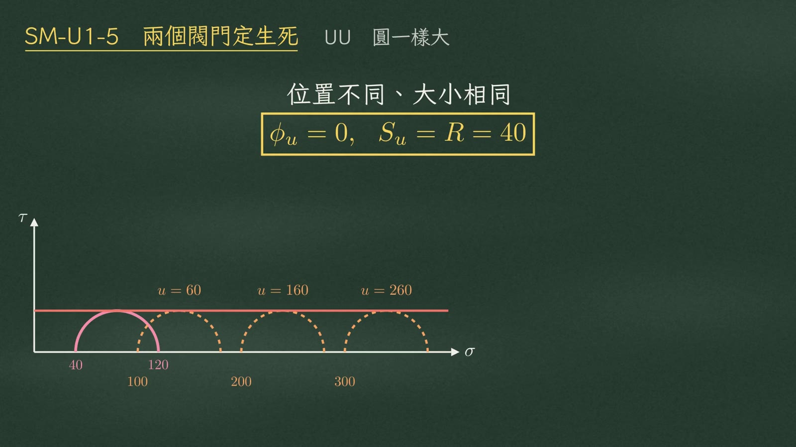
所以圍壓 100、200、300，三個總應力圓位置不同、大小相同（對應 \(u=60,160,260\)）。包絡線水平，不排水摩擦角等於零，不排水強度 \(S_u\) 就是半徑：
$$\phi_u=0,\qquad S_u=R=40$$✔ 可以：不排水的總應力分析，\(\tau_f=S_u\)
✘ 不行：拿來算破壞面、做長期穩定分析
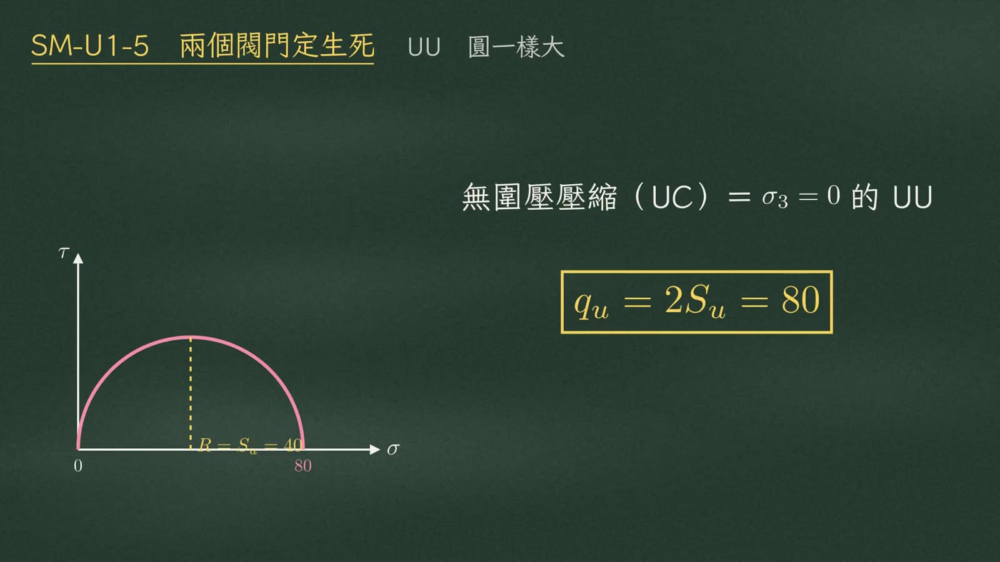
無圍壓壓縮，就是 \(\sigma_3=0\) 的 UU，圓從原點開始：
$$q_u=2S_u=80$$5Skempton 孔壓參數
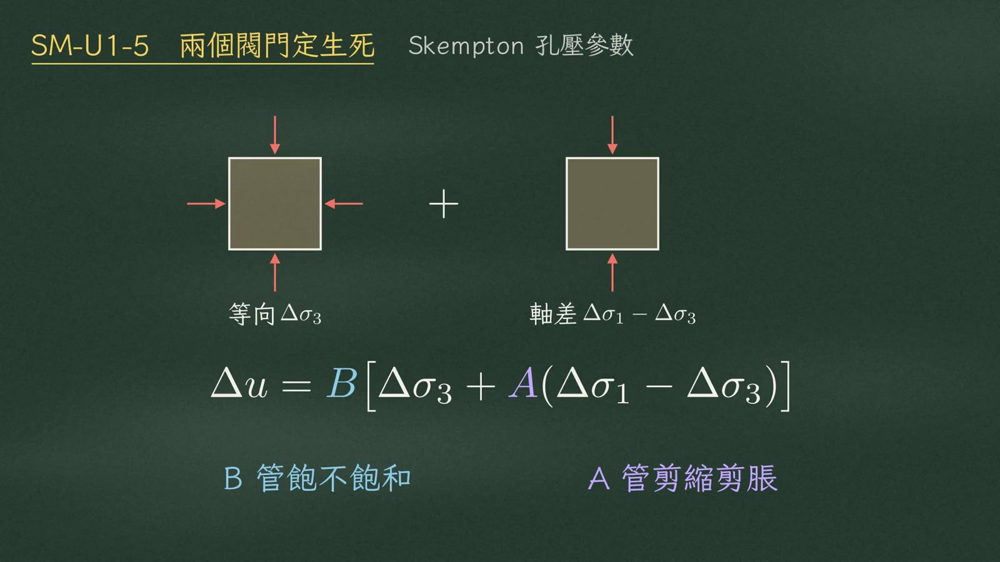
孔隙水壓從哪來？把加載拆成「等向 \(\Delta\sigma_3\)」＋「軸差 \(\Delta\sigma_1-\Delta\sigma_3\)」兩塊，Skempton 公式：
$$\Delta u=\color{#3d86b3}B\color{black}\big[\Delta\sigma_3+\color{#8a63c9}A\color{black}(\Delta\sigma_1-\Delta\sigma_3)\big]$$B 管飽不飽和，A 管剪縮還是剪脹。（影片 4:23–4:37）
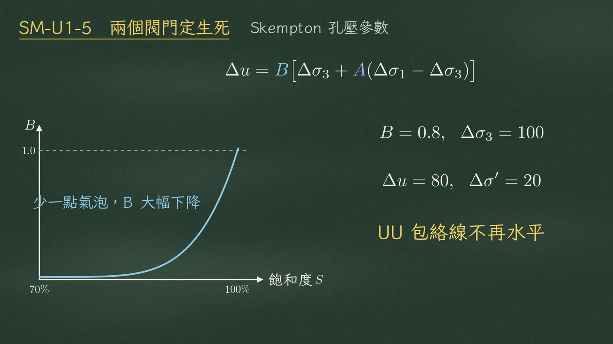
完全飽和 \(B=1\)，少一點氣泡就大幅下降。例如 \(B=0.8\)，室壓加 100：
$$B=0.8,\ \Delta\sigma_3=100\;\Rightarrow\;\Delta u=80,\quad \Delta\sigma'=20$$孔隙水壓只加 80，有效應力多了 20，UU 包絡線就不再水平。
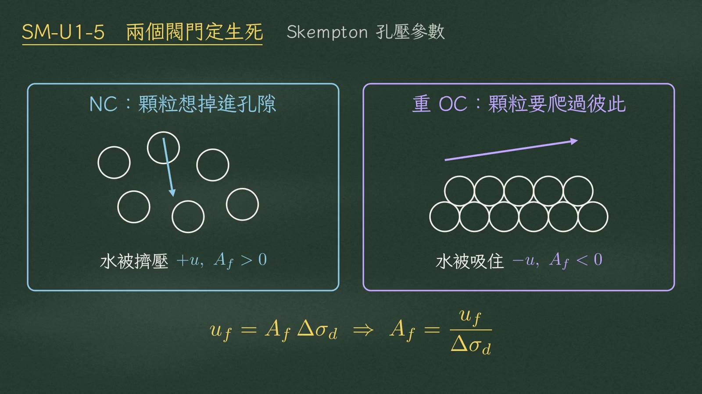
| 土況 | 顆粒行為 | 孔壓 | \(A_f\) |
|---|---|---|---|
| NC | 顆粒想掉進孔隙，擠壓水 | \(+u\) | \(>0\) |
| 重 OC | 顆粒要爬過彼此，吸住水 | \(-u\) | \(<0\) |
常規三軸：
$$u_f=A_f\,\Delta\sigma_d\;\Rightarrow\;A_f=\frac{u_f}{\Delta\sigma_d}$$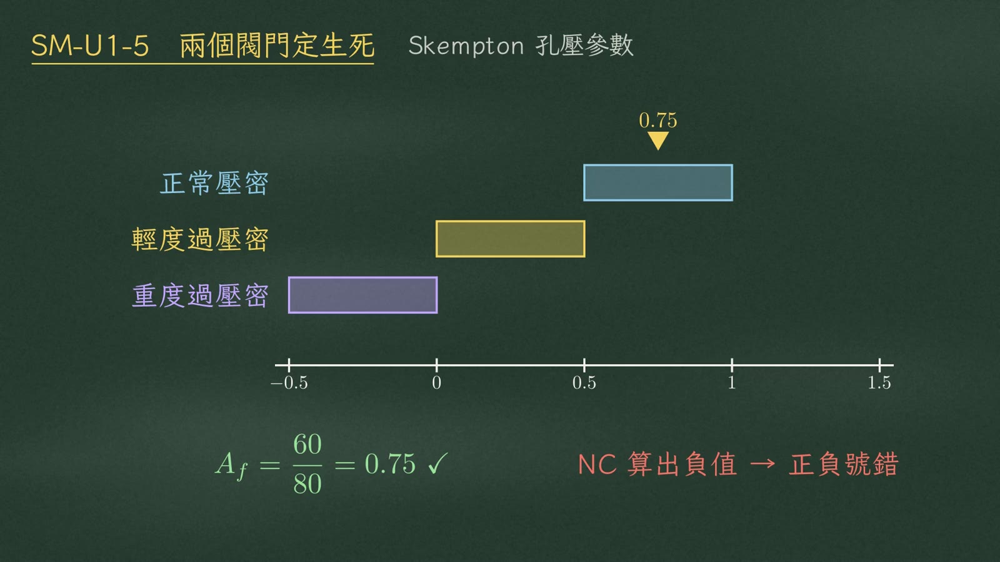
正常壓密的 \(A_f\) 大約 0.5 到 1，重度過壓密是負的。示範黏土：
$$A_f=\frac{60}{80}=0.75\ \checkmark$$6NC 黏土強度比
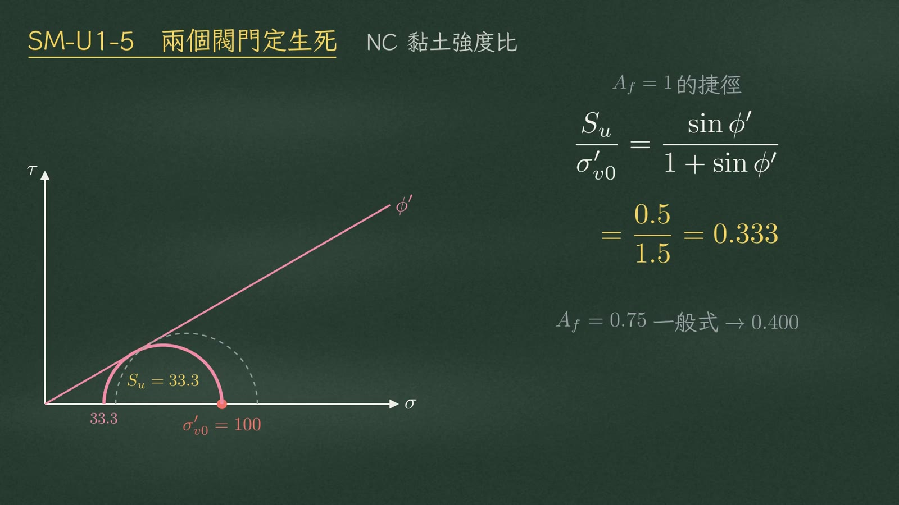
正常壓密黏土的強度比：把破壞圓右端釘在有效覆土應力，往左長到切線。\(A_f=1\) 時：
$$\frac{S_u}{\sigma'_{v0}}=\frac{\sin\phi'}{1+\sin\phi'}=\frac{0.5}{1.5}=0.333$$黑板旁註：\(A_f=0.75\) 用一般式 → 0.400。
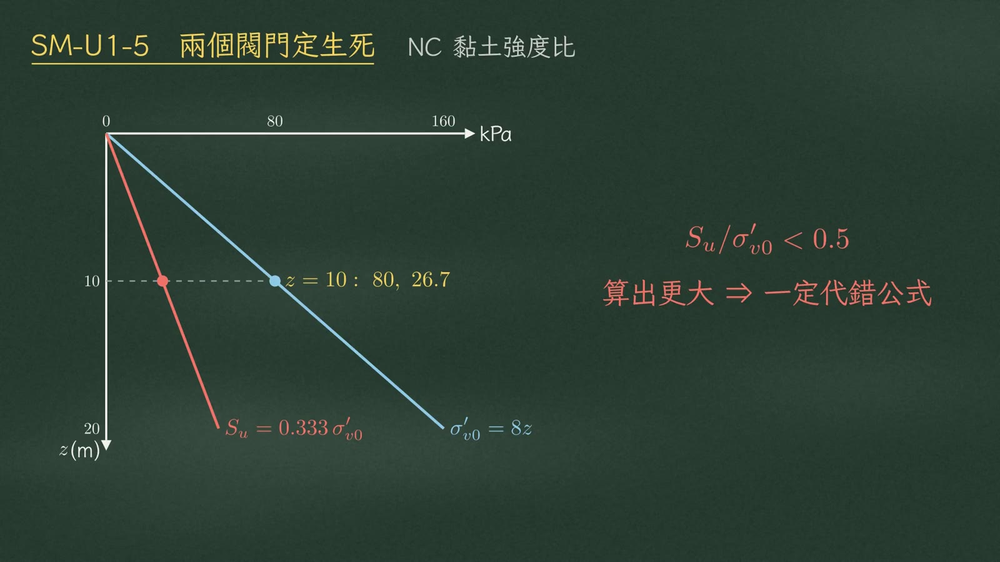
所以 \(S_u\) 隨深度線性成長：有效單位重 8，深度 10 m，覆土應力 80，\(S_u=26.7\)。
7考場速算
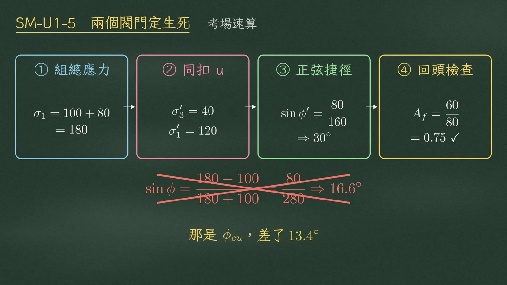
考場 CU 題四步收工：
| 步驟 | 內容 |
|---|---|
| ① 組總應力 | \(\sigma_1=100+80=180\) |
| ② 同扣 \(u\) | 兩邊同扣 \(u_f\)：\(\sigma'_3=40,\ \sigma'_1=120\) |
| ③ 正弦捷徑 | \(\sin\phi'=\dfrac{80}{160}\Rightarrow30^\circ\) |
| ④ 回頭檢查 | \(A_f=\dfrac{60}{80}=0.75\ \checkmark\) |
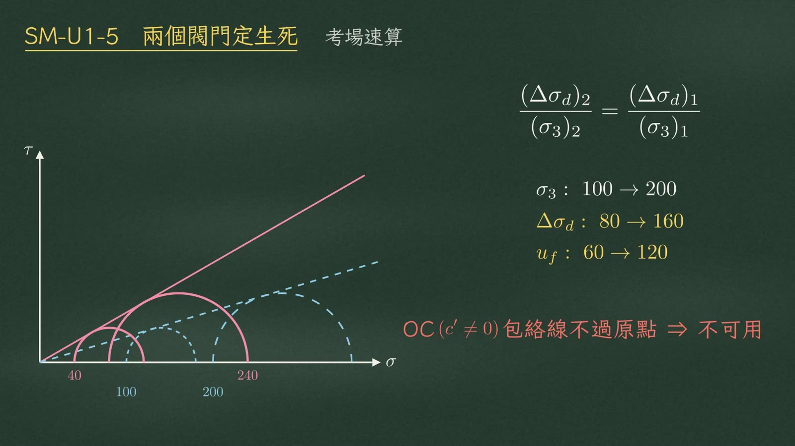
同一塊正常壓密黏土換圍壓，整張莫爾圖從原點等比例放大：
$$\frac{(\Delta\sigma_d)_2}{(\sigma_3)_2}=\frac{(\Delta\sigma_d)_1}{(\sigma_3)_1}$$| 量 | \(\sigma_3=100\) | \(\sigma_3=200\)（兩倍） |
|---|---|---|
| \(\Delta\sigma_d\) | 80 | 160 |
| \(u_f\) | 60 | 120 |
8檢查點與陷阱
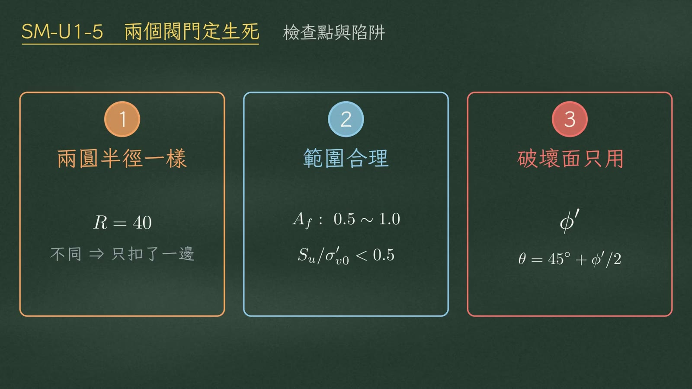
算完做三個檢查（影片 6:46–7:02）：
② 範圍合理：\(A_f\)：0.5～1.0；\(S_u/\sigma'_{v0}<0.5\)。
③ 破壞面只用 \(\phi'\)：\(\theta=45^\circ+\phi'/2\)。
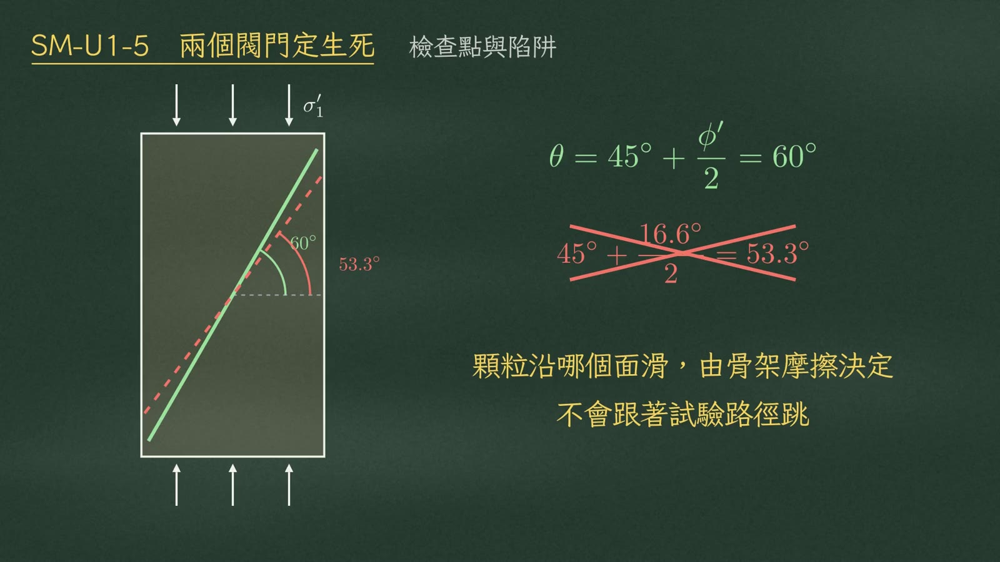
破壞面角度是 45° 加有效摩擦角的一半：
$$\theta=45^\circ+\frac{\phi'}{2}=60^\circ$$顆粒沿哪個面滑，由骨架摩擦決定，不會跟著試驗路徑跳。
9回到工程
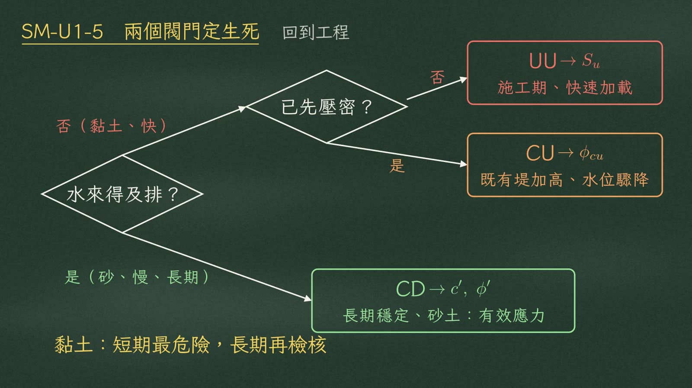
回到工程，先問水來不來得及排。
| 情境 | 試驗 | 參數 |
|---|---|---|
| 黏土快速加載、施工期 | UU | \(S_u\) |
| 既有堤上加高、水位驟降 | CU | \(\phi_{cu}\) |
| 長期穩定、砂土 | CD | 有效應力參數 \(c',\phi'\) |
黑板註：黏土短期最危險，長期再檢核。
10總結
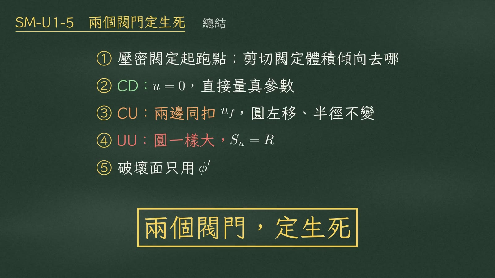
- 壓密閥定起跑點，剪切閥定體積傾向去哪裡。
- CD：孔隙水壓為零（\(u=0\)），直接量真參數。
- CU：兩邊同扣 \(u_f\)，圓左移、半徑不變。
- UU：圓一樣大，\(S_u=R\)。
- 破壞面只用 \(\phi'\)。